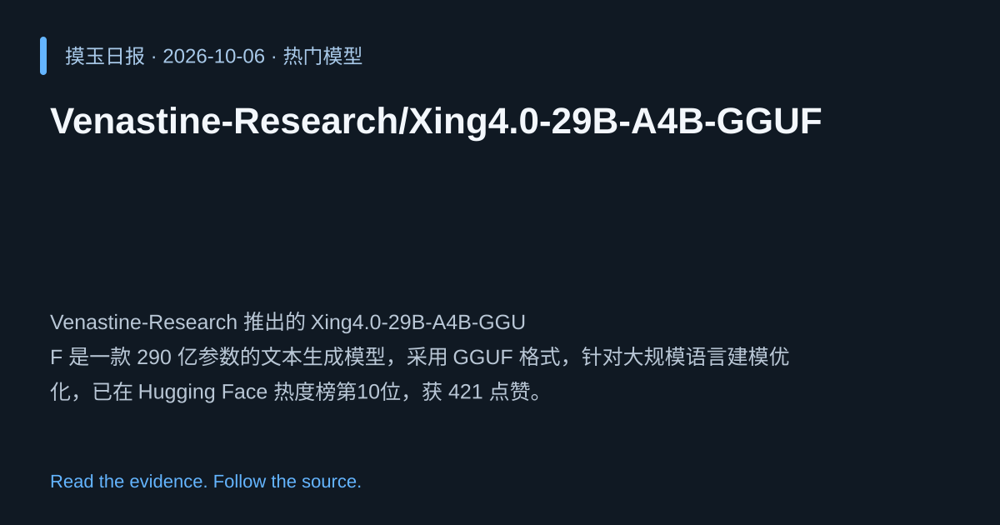

2026-10-06 · Asia/Shanghai · 热门模型 · #10
Venastine-Research/Xing4.0-29B-A4B-GGUF
Venastine-Research 推出的 Xing4.0-29B-A4B-GGUF 是一款 290 亿参数的文本生成模型，采用 GGUF 格式，针对大规模语言建模优化，已在 Hugging Face 热度榜第10位，获 421 点赞。
为什么值得关注
凭借超大参数量和高效 GGUF 推理，满足高质量文本生成需求，适配最新硬件加速。
- 29B 参数规模，提升生成质量与多样性。
- GGUF 格式，支持更快加载与推理。
- 在 Hugging Face 文本生成榜单排名第10，受社区热捧。

热度 83.2 / 100；排名与评分保留该期记录。